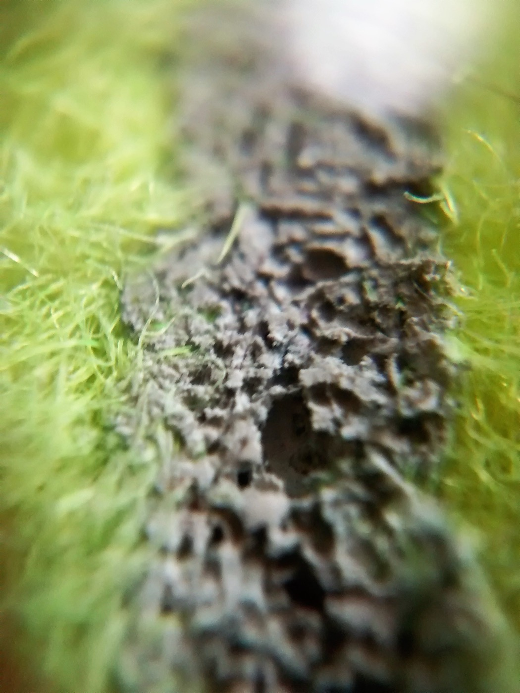
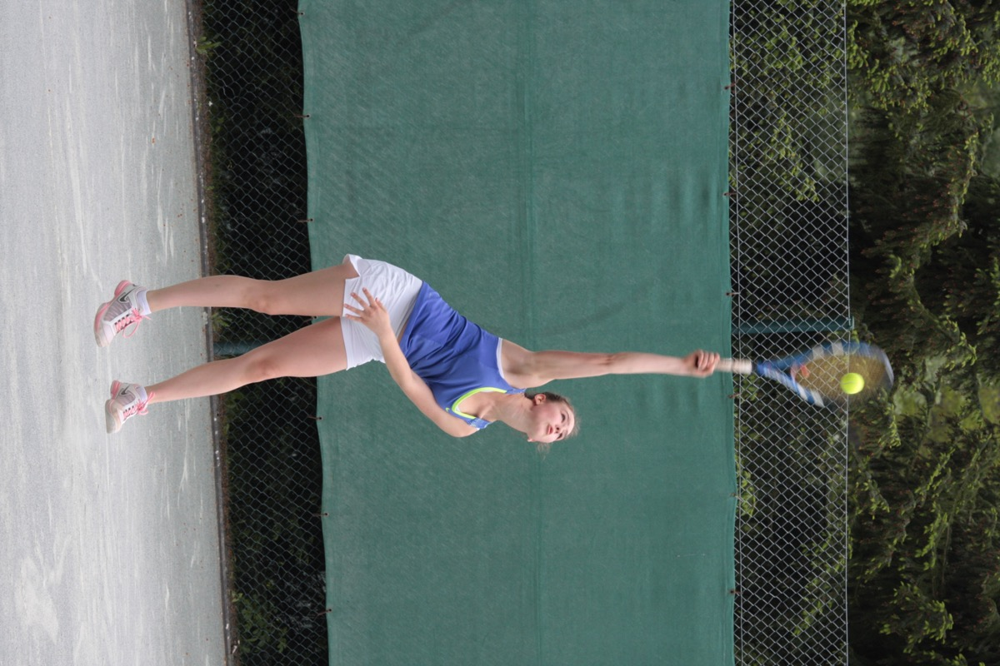

Step 1 — Stand at the baseline
Start on the right (deuce) side to begin a game. Feet behind the line. Aim at the opposite service box — diagonal, not straight.
Basics 4 of 6
Consistency before power. Underarm is legal if you need it on day one.
Start on the right (deuce) side to begin a game. Feet behind the line. Aim at the opposite service box — diagonal, not straight.

Lift the ball with a straight arm. Toss slightly in front of your hitting shoulder — not behind your head. Watch the ball, not the court.

Reach up. Simple overhead into the box. If the toss is a mess, catch it and start again. No jump serve on week one.

Follow through across the body. Get ready for the return. Second serve: slower and safer. Double fault is just “try again next point.”